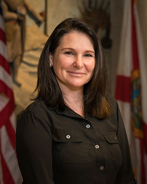
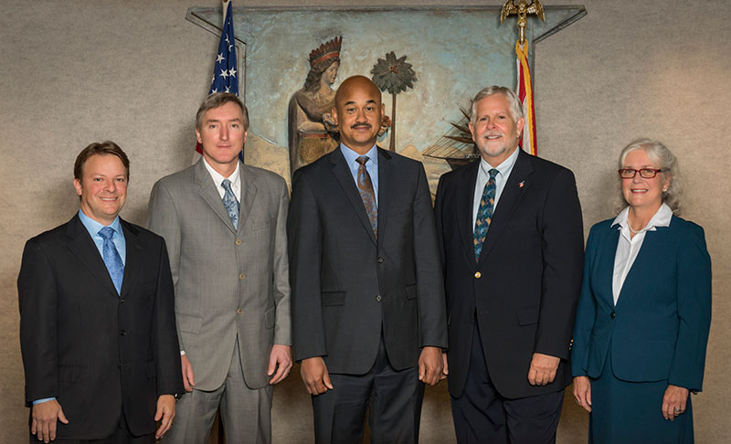
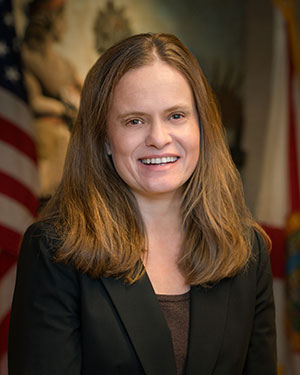
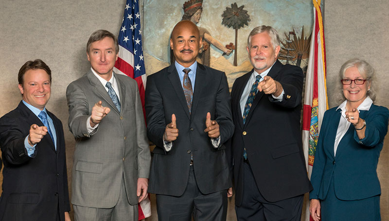

From the County Manager
To the citizens of Alachua County

Michele Lieberman, County Manager
On behalf of the Alachua County Board of County Commissioners (the Board), I am honored to present the 2019 Annual Report, my first as the appointed Alachua County Manager. Our mission is to provide responsive service to citizens and responsible stewardship of county resources for current and future generations. With this mission in mind, I am proud to share the last year’s successes, look forward with determination to next year’s objectives, and identify the challenges we face in meeting those objectives.
Last year's report highlighted the need to rebuild relationships. I am pleased to report that over the previous 12 months we have made great strides in nurturing civility, trust, and cooperation with our staff, our municipalities, the University of Florida, our constitutional officers, community stakeholders, and citizens. When the inevitable conflicts arise, the process is less contentious, more collaborative, and more professional.
Mission
Alachua County’s mission is to provide responsive service to citizens and responsible stewardship of county resources for current and future generations.
This year's report will focus on a simple phrase: "Alachua County: Working for You." It is my privilege to lead almost 1,000 men and women who wake up every morning and focus their energies and talents on working for you.
An essential part of working for you involves leveraging good relationships and partnerships. Collaborating on projects with our largest municipal partner, the City of Gainesville, is smart. We are making progress on multiple fronts in this partnership. Building on last year's reduction of the County's contribution to the College Park Community Redevelopment Area (CRA), which resulted in almost a million dollars per year returning to the County's General Fund, the County and City have agreed on a consolidation of the four CRAs. This agreement will earmark over $70 million in funding available for transformational projects in East Gainesville and areas of need in the unincorporated area. We are in the early stages of working with the City on projects along the Waldo Road corridor and the Cabot/Koppers Superfund site.
Vision
Alachua County is committed to responsible stewardship of the resources entrusted to us by our citizens, realizing that our natural and human resources are our most valuable assets. Furthermore, Alachua County is dedicated to be transparent and responsive, creating an atmosphere of trust with the citizens we serve.
Both the County and the City of Gainesville continue to share the operational costs of Grace Marketplace. This low barrier homeless shelter is on the front line of helping this highly vulnerable population. At a recent meeting, we agreed to shut down the Dignity Village homeless encampment adjacent to the shelter and to fund the creation of camping options within the Grace campus. This action will allow for more proactive case management. Grace is just one step in finding solutions to homelessness in Alachua County. Both the County and the City are determined to continue to look for innovative solutions to the fundamental problem of the lack of affordable housing.
Another example of successful municipal partnership is the relocation of the Alachua County Fairgrounds. After many years of working to provide a Fairgrounds/Agriculture Center that citizens can be proud of, we are relocating to the former Canterbury Equestrian Center in the City of Newberry. This project includes a new administrative office and community center for the Cooperative Extension Office. The community center will provide a space that is fitting and appropriate for their classes and training programs as well as other community events. We have partnered with the Newberry City Commission to make this a reality.
The Fairgrounds relocation opens up exciting possibilities for the current fairgrounds site. For decades this site has been underutilized. Many have viewed its redevelopment as an essential piece of the puzzle for economic development in East Gainesville. We are deep into talks with the US Army Reserve 81st Readiness Division about locating an Equipment Concentration Site on this site. If approved, the Army Reserve project will include $30 million in site improvements and 75 jobs with an average salary of $50,000 per year.
The Board has been clear that nothing is more important than working to ensure that every child has an opportunity for a healthy and productive future. Our Children’s Services division launched three important programs: the NewboRN Home Visit Program, the Transforming Professional Development Program, the Social and Emotional Development Program. The Board further demonstrated their dedication to Alachua County's children by their decision to put the Children's Trust initiative on the 2018 ballot. Much to the credit of our citizens, it passed by a substantial majority. The Trust has begun meeting regularly and is laying the groundwork for putting their structure in place in anticipation of the property tax collections starting in October of 2019. The Children’s Trust will have ten members. Five members were appointed by law and are currently serving and the remaining five will be appointed by the Governor.
One of our most difficult challenges of the last year has been the number of severe dog attacks that have shocked and saddened our community. The County has worked diligently to improve our procedures, increase our staffing, and strengthen our ordinances to address these unacceptable threats to the public. Our efforts have included:
- The Commission approved five new positions (investigators, officers, and a dispatcher).
- The Commission adopted amendments to our Animal Services Ordinance allowing:
- Fines and other penalties to compound if the animal owner has already violated similar municipal codes
- County Attorney authorization to seek injunctive relief for repeated violations of local ordinances within 12 months
- Animal Services to impound dog(s) that are the subject of an aggressive/dangerous dog investigation unless the officer makes a written determination that their owner can safely confine the dog(s)
- That the owner is required to pay a deposit if requesting an aggressive/dangerous dog appeal hearing
- Penalties to more closely reflect the severity of the violations and be better aligned with the City of Gainesville's fee schedule for animal-related code violations
- The Commission approved the Irresponsible Pet Owner amendment to our Animal Services Ordinance allowing:
Values
To meet our mission, employees should recognize these fundamental values and these values should serve as a guide to employee conduct and actions where policies are silent or in apparent conflict.
Integrity: We adhere to standards of ethical conduct.
Honesty: We are truthful, fair and open with our fellow employees and the people we serve
Respect: We are responsive, compassionate and courteous in all our interactions
Diversity: We embrace the value and power of diversity in our community
Innovation: We are committed to the consideration and implementation of new ideas
Accountability: We are accountable for our behavior and the quality of work performed individually and as teams
Communication: Our open communication and sharing of ideas enhances the decision-making process
- An owner to be so classified after three violations of certain County ordinances or 2 violations of more severe ordinances, aggressive/dangerous classifications, and/or State statutes within a 3-year period
- Any domestic animals owned by the person must be sterilized within 30 calendar days of the designation as an Irresponsible Pet Owner
- Any domestic animals owned by the person must be microchipped, vaccinated, and properly registered with Animal Services
- The owner must pay a registration fee, annual renewal fee, and will maintain this designation for a period of 3 years
- The Irresponsible Pet Owner may not acquire, own, keep, control, or harbor domestic animals beyond those the person owns, keeps, controls, or harbors at the time of designation
As in past years, maintaining our transportation infrastructure continues to be a significant challenge. The Board understands the importance of making progress with our roads and has augmented Gas Tax dollars with increases in General Fund contributions. In 2015, $1.1 million in General Fund went towards roads. In 2019 that more than tripled to $3.6 million. We are pleased to report on the progress of two of the County's most important arterial roads: Tower Road and NW 43rd Street. Tower Road is completed, and NE 43 Street is near completion. We are making good progress on the SW 8th Avenue connector project.
Our most valuable asset in working for you is our dedicated County staff, who turn the vision of the Board into reality. Over the last year, we have worked hard to strengthen employee morale and trust. Our efforts are working to create an atmosphere that values and respects these men and women. To retain and recruit an outstanding workforce, the Board has supported cost of living increases, innovative training, and individual development programs, and continues to take steps towards paying a living wage. Our goal is to go from $13.50 per hour to $14 in the next fiscal year with the ultimate object of reaching $15 per hour in fiscal year 2022.
I encourage you to take the time to read this report. It will give you a good understanding of the services provided by your County and what we mean when we say, Alachua County: Working for You. Working for you is our purpose. It defines who we are. With the help of citizens, partners, and stakeholders, we will continue to work to improve and protect our County.
county commissioners

County Commissioners from left to right: Ken Cornell, Commissioner, Mike Byerly, Vice Chair, Charles “Chuck” Chestnut, IV, Robert “Hutch” Hutchinson, Chair, Marihelen Wheeler, Commissioner
county attorney

Sylvia Torres, County Attorney
The County Attorney’s Office provides quality legal services to Alachua County’s Board of County Commissioners, Constitutional Officers, and departments. Our services include:
- Providing quality, timely and proactive legal advice to our clients to minimize their exposure to legal liability and risks of litigation
- IProviding quality legal representation to our clients before administrative, judicial and quasi-judicial bodies
- Litigating in a manner that serves the best interest of our clients while always being mindful of the fact that litigation inevitably involves a significant expenditure of public funds and staff resources
- Maintaining open lines of communication with our clients to educate and aid in meeting their needs
- Assisting our clients in identifying feasible options that will implement and achieve the goals, policies and objectives of the Board of County Commissioners
- Interpreting the law in a fair, reasonable, and objective manner that recognizes legal problems or restrictions, but which helps our clients to attain their goals to the maximum extent possible
- Respecting the public trust by being courteous to the public and mindful that government does business for the public, while never forgetting that our client is the County and the Board of County Commissioners and not the general public
- Practicing to the highest ethical standards of the legal profession
SUCCESSES
- Negotiated joint planning agreement with City of Alachua resulting in Alachua County transferring ownership and maintenance responsibilities for two roads to the City and providing for future improvements to County maintained roadway intersection
- Aided the Board in strengthening regulatory framework regarding dog attacks and worked with staff to address public safety concerns
- Supported Board and staff through contentious fuel tax distribution negotiations with the City of Gainesville and other municipalities, culminating in an interlocal agreement and fuel tax ordinance adoption
OBJECTIVES
- Continue to identify and offer staff-level training opportunities on legal issues, procedures, and processes
- Provide support to creation and rewrite of administrative and departmental procedures
financial information
![pie chart2, FY18 General Fund Expenditures $156,074,613 + Increase in Fund Blance $2,459,840 = $158,534,462 - Personal Services - $36,398,416, Operating Expenditures - $30,919,225, Transfer to Other Funds - $ 14,384,595, Grants & Aid - $6,971,122, Transfer to Property Appraiser - $5,075,244, Payment to Tax Collector - $4,485,149, Transfer to Clerk of Court - $2,568,238, Transfer to Supervisor of Elections - $1,979,282, Increase in Fund Balance - $2,459,849, Capital Outlay - $1,734,209, Transfer to Sheriff - $51,559,133](images/financial_02.jpg)
governance
Two critical hires have taken place recently, the Fire/Rescue Chief and the Growth Management Director. Both of these accomplished individuals came up through the ranks of their respective departments and, after decades of experience and commitment to the County, have earned their leadership positions. These promotions demonstrate to our employees that we reward talent, hard work, and persistence in our organization and that career development is encouraged, nurtured and valued.
Communicating how we are working for you is always at the forefront of our efforts. All of our departments do an excellent job of keeping the public informed. Departments also do well in communicating with stakeholders who are particularly affected by certain issues. We use our website, Cox Channel 12, social media, video productions, press releases, our newsletter, and many other tools to keep you informed. Social media has become increasingly important, particularly in the case of emergencies. Currently, the County has 76,746 Facebook "LIKES", 8,877 Twitter "Followers" and 2,042 Instagram "Followers". Many of our departments have their own social media sites that cater to citizens with specific interests.
We are always exploring how technology upgrades can help us better serve our citizens and employees. Upgrades over the last year include:
- Developed a new in-house application for the administration and tracking of emergency shelter populations for use during a disaster activation
- Implemented New World software for budget, employee benefits, and human resources Completed the redesign of the "News" section of the website to improve how we keep citizens informed
- Completed the Hazardous Waste Collection Center Point of Sale application that tracks and processes the payments from citizens that drop off hazardous waste at Alachua County collection centers
- Replaced the aging in-house Policy Management System with an updated version that runs in the County's new Skillport training module
SUCCESSES
- In partnership with CareerSource, the County held an all-day event to hire over 20 positions in Public Works to replace inmate labor
- Garnered $400,000 State appropriation for the construction of the Fairground/Agriculture center
- Successful recruitment efforts to increase the diversity of applicant pools resulted in 66 (49%) of last year's 134 targeted positions filled by females and minorities
- The Board amended the Human Rights Ordinance to provide additional protection from discrimination in housing
OBJECTIVES
- Increase community awareness and participation in the 2020 Census through the Complete Count Committee to maximize legislative representation and funding resources to our community
- Receive full FEMA reimbursement for outstanding Hurricane Irma expenses
- Cmplete rewrite of the County's Procurement Code and Procurement Policy Handbook
- Implement an active safety training and accountability plan to limit injuries on the job
public safety
The most important way we work for you is evidenced each year by the budgetary priority given to public safety. Our funding of the Sheriff, the Jail, and Fire/Rescue make up the largest portion of your tax dollars.
We were very fortunate last year that the devastation that accompanied Hurricane Michael spared Alachua County. We were incredibly proud of our response to our neighbors to the northwest. Alachua County Fire Rescue was a crucial partner in assisting in the aftermath with 20 EMT's and Paramedics deployed for two weeks as a Rescue Strike Team. The team consisted of our Mobile Support Unit Bus, three ambulances, and six additional employees who established a radio communication system and tower for the entire region with our Mobile Area Radio Command Unit.
SUCCESSES
- Opened Rescue 28 in Newberry
- Transitioned to a Special Assessment to fund Fire Services
- Purchased property for FS80 Engine Relocation
- Completed Phase 1 of the 800-megahertz trunked radio system replacement
- Completed Phase 1 of the 800-megahertz trunked radio system replacement
- Completed enhanced technology and communication in the 9-1-1 center and the Emergency Operations Center
- Received several grants to expand and enhance our Unmanned Aerial Vehicle (UAV) program, equipment to protect our employees for enhanced medical care during active shooter incidents, and building enhancements to our Loften Training Center
- NBC’s Today Show featured one of our firefighters, bringing national attention to our department
OBJECTIVES
- Increase community awareness and participation in the 2020 Census through the Complete Count Committee to maximize legislative representation and funding resources to our community
- Receive full FEMA reimbursement for outstanding Hurricane Irma expenses
- Cmplete rewrite of the County's Procurement Code and Procurement Policy Handbook
- Implement an active safety training and accountability plan to limit injuries on the job
NATURAL RESOURCES
Another meaningful way we work for you is in the wise and thoughtful stewardship of dollars from voter-approved tax referendums. With funding from the Wild Spaces Public Places ballot measure passed in 2016, we have acquired 1396 acres of new conservation land. The County has acquired three valuable conservation land parcels: Four Creeks Preserve, Serenola Forest, and Fox Pen Preserve. These properties total 1396 acres, 949 acres paid for by the County and 447 acres paid for by our partners, Alachua Conservation Trust and the City of Gainesville.
Our goal is not just to acquire property, but to also make it accessible to the public with the addition of trails and informational kiosks. Over the next year, we plan to open Four Creeks Preserve, Turkey Creek Preserve, Watermelon Pond Preserve, and Balu Forest for public enjoyment.
SUCCESSES
- Received $27,000 in funding from the Florida Fish and Wildlife Conservation Commission for invasive plant management on Sweetwater Preserve
- Completed the pocket park next to the Southwest Advocacy Group Family Resource Center
- $100,000 donation from Rotary for the construction of a splash pad
- Obtained a $423,480 from FDEP for a restoration project at Hornsby Springs on the Santa Fe River
- Collected high-quality native sandhill ground cover seed from Watermelon Pond (Wright Track) and used it to seed 22-acres across Watermelon Pond (Metzger Tract), Sweetwater and Turkey Creek Preserves marking the first time we harvested native ground cover from an Alachua County Forever site to restore other preserves
OBJECTIVES
- Use Wild Spaces and Public Places funding to complete park improvement projects including the construction of a splash pad at Veterans Park and restoration of the tennis courts at Jonesville Park
- Resurface of basketball courts at Copeland and Monteocha Park
- Increase the amenities provided for citizens at Poe Springs Park and increase of hours the park is open to the public
Sustainable Stewardship
When it comes to protecting people and our environment, lines on a map don't matter. Counties are responsible for the protection of our water, air, and most importantly, our citizens: municipal residents and unincorporated residents alike. While this can be contentious at times, the Board has shown strong leadership in this effort. This leadership is all the more important as we witness diminishing state and federal environmental protection efforts in recent years. It is the County's responsibility to fulfill our state-mandated obligations to reduce nitrogen and phosphorus levels into local springs, creeks, lakes, and rivers and resolve conflicts between private interests and the public good.
We are making considerable progress in instituting essential environmental protections. Each of the following items came about as a result of a very inclusive process that included multiple meetings with the Board, staff, stakeholders, and the general public. Our successes included:
- Adopting the Countywide Stormwater Quality Code to reduce pollution discharges to groundwater, springs, creeks, lakes, and rivers
- Adopting the Countywide Wetland Protection Code to protect surface water and wetland systems throughout the County, reducing water pollution and improving local resiliency to extreme flooding and drought conditions
- Strengthening the Countywide Water Quality Code to further reduce water pollution from landscape fertilizer, stormwater, and irrigation systems by further inclusion of best design and maintenance practices
- Continued progress on the Newnans Lake watershed restoration including installation of filtration weirs for phosphorus removal
- Completing stormwater treatment retrofit projects to demonstrate the effectiveness of low impact design practices
SUCCESSES
- Broke ground on the Eco-Industrial Park located next to the Leveda Brown Environmental Park
- The University of Florida has committed $150,000 to the construction of the park and related research challenge grants
- Eliminated 1,900 irrigation sprinkler heads through the Turf SWAP landscaping retrofit grant program with an estimated annual water savings of 16 million gallons
- Negotiated reduced tipping rates at New River Landfill and secured the future disposal of our waste
- Assisted Union County in adopting new Comprehensive Plan and mining regulations to protect wetlands and the Santa Fe River from mining operations
- A 3% reduction in electricity usage in County buildings
- Added 180kW of rooftop solar photovoltaic panels to the Josiah T. Walls, State Attorney and Records buildings
- Developed the Alachua County/City of Gainesville Joint Water Supply Facilities Work Plan and adopted the Comprehensive Plan amendments in June 2018
- Produced 2,070 gallons of Biodiesel from waste vegetable oil to fuel county vehicles and an emergency generator
- Expanded waste battery collection services to include all types of with more than 16 tons of batteries safely recycled and diverted from landfills
- Exceeded State contract pay-for-performance requirements in managing regional petroleum contamination assessment and cleanup activities at 400 facilities in eleven counties and compliance verification inspections at 825 storage tank facilities in sixteen counties
- Increased the load capacity on the long-haul trailer operation at the Leveda Brown Environmental Park resulting in fewer trips to the landfill
- Installed updated equipment to help sort the recyclables delivered to the Materials Recovery Center
OBJECTIVES
- Implement a ban on single-use plastic bags and Styrofoam and begin enforcement of the ordinance
- Complete construction documents for the core buildings of the Eco-Industrial Park Research Hub and Bulk Materials Buildings
- mplement public education, inspections, and waste management improvements to exceed local compliance with new Federal and State pharmaceutical waste regulations
- Develop the Environmental Protection Department Water Quality Application for data tracking and management of Countywide water sampling
- Replace the working floor at the Leveda Brown Environmental Park's Transfer Station
- Continue to reduce utility costs in County buildings through effective monitoring and maintenance systems
infrastructure/capital improvements
As mentioned earlier in this report, the Board understands the importance of making progress on the maintenance of our roads. Declining transportation infrastructure is not just an Alachua County issue; it is a nationwide challenge. While voters have approved tax initiatives for land conservation, healthcare, schools, public buildings, and parks, using an infrastructure sales tax for transportation has been voted down three times. We continue to work on the prioritized list of projects, but innovative strategies will be necessary if we are to catch up and stay current with repaving, maintenance, and repair projects
For both the convenience and well-being of the public and our employees, our vertical infrastructure needs to be high functioning, convenient, and safe. With the aging of County buildings such as the Wilson Building, and the Growth Management Building, maintenance and repair costs continue to skyrocket and are approaching at the point of diminishing return. The Commission has approved moving forward in a deliberate process to solve current, and future space needs problems. The most intriguing possibility is the construction of a new County Administration Building that would allow consolidation of downtown departments and a one-stop-shopping location for these county services. We are exploring possible space-needs solutions that include our existing properties, collaboration with other governmental agencies, and partnering with the private sector.
SUCCESSES
- Completed Tower Road and NW 43rd Street resurfacing projects, NW 16th Ave Midblock Crossing, CR 231 Guardrail, and SW 8th Avenue Extension Phase I
- Completed the NW 16th Ave Slope Stabilization project
- Construction Permits Issued – 308 utility, 354 driveway, 20 right-of-way use, 21 subdivision, and 12 sites
- Achieved Class 5 Community Rating System for Alachua County which assists homeowners with better flood premium discounts
- Controlled 41 acres of invasive cogon grass, at 41 locations within the County's right-of-way
- Prepared and submitted USDOT Build Grant application for consideration of funding the SW 20th Ave Bridge replacement
- Maintained and constructed improvements to the Robin Lane, SW 35th Street, and Greentree Village retention basins
- Opened the 2nd satellite maintenance shop at the Fire Rescue Central Supply Warehouse to service ambulances
- Chip-sealed approximately 10.1 miles of graded roadways, this includes about 1.6 miles for the City of High Springs as part of an inter-local agreement
- Completed flood mitigation project affecting SE 27th street and worked with the City of Gainesville to solve a flood issue affecting SE 15th street
- Addressed ADA issues and concerns on all Critical Facilities Buildings
- Completed the Window Replacement Project at the State Attorney's Building
- Successfully transitioned Janitorial services in 25 County buildings from contracted to in house services
- Completed over 18,000 work orders and maintained County buildings within budget
OBJECTIVES
- Transportation Projects:
- NE 21st Street Bridge Replacement
- Tower Road SUNTrail
- Eco-Industrial Park Infrastructure
- SW 8th Ave Extension Phase II
- NW 91st St Sidewalk
- SW 24th Ave Sidewalk
- NW 170th Street Sidewalk
- NW 32nd Ave Full Depth Reclamation
- NW 16th Ave Resurfacing
- Tower Road Phase II Resurfacing
- W University Ave Resurfacing
- Expand the stormwater asset inventory GIS database to track maintenance efforts
- Improve resource utilization tracking within the asset management software
- Finalize the Public Works Fleet Roof and the Sheriff's Roof Projects
economic opportunities
One of our best tools for stimulating economic growth is the Tourist Development Tax (TDT). Paid by visitors to the County, this year the tax raised over $5.5 million; the highest total in the history of the tax. For decades this revenue has been used for capital projects such as the UF Performing Arts Center, Champions Park in Newberry, the Cade Museum, and many others. It has been used to bring in sporting events and to support cultural and natural attractions and events.
We are very excited by the many economic development opportunities that are in the works countywide. The County supports sustainable economic development and smart growth. It is important for us to make the process of working with the County as efficient and customer friendly as possible. We are working for you in this effort through the implementation of a new software program for building permitting, codes enforcement, development review, and zoning. Once getting through the transition period, this new software will improve customer service and staff efficiency.
SUCCESSES
- Developed draft amendments to update the County's Comprehensive Plan and address a wide range of issues as part of the Evaluation and Appraisal of the Plan required every seven years
- The County transferred $4.6 Million to municipalities to benefit Community Redevelopment Agency efforts
- Offered webinar opportunities to municipalities and stakeholders to learn more about economic development programs and best practices
- The City of Gainesville and Alachua County jointly nominated areas in incorporated and unincorporated East Gainesville to be designated as Opportunity Zones
- Made Qualified Target Industry (QTI) tax refund payments to support high wage jobs
- Increased the number of events taking place at the Poe Springs Lodge, the Freedom Community Center, and the Fairgrounds
- Created a new Visit Gainesville/Alachua County destination marketing plan in partnership with the University of Florida's Warrington College of Business
- Restored 50% of lost State funding to non-profit cultural organizations whose programming promotes tourism and directly enhances Alachua County for residents and visitors
- Over 500,000 residents and visitors participated in more than 2,500 arts, nature and culture programs funded through Tourist Development Taxes
OBJECTIVES
- Implement a ban on single-use plastic bags and Styrofoam and begin enforcement of the ordinance
- Complete construction documents for the core buildings of the Eco-Industrial Park Research Hub and Bulk Materials Buildings
- mplement public education, inspections, and waste management improvements to exceed local compliance with new Federal and State pharmaceutical waste regulations
- Develop the Environmental Protection Department Water Quality Application for data tracking and management of Countywide water sampling
- Replace the working floor at the Leveda Brown Environmental Park's Transfer Station
- Continue to reduce utility costs in County buildings through effective monitoring and maintenance systems
community resources
The State mandates that counties provide social services to their residents. Working with many partners, both governments and non-profits, these services are a crucial way we work for you. Helping those most in need is not only the compassionate thing to do, but it also makes financial sense. By helping people through difficult challenges, we ultimately benefit the entire community by fostering productive and contributing members of society.
To this end, we served over 41,466 people through various community programs to address and lessen the impact of poverty, shelter and feed the homeless and hungry, assisted victims of crime, advocated for veterans and supported youth, seniors and those in crisis.
SUCCESSES
- Created an Affordable Housing Workgroup consisting of a broad range of stakeholders which generated a report with affordable housing strategies to include in the draft amendments of the Comprehensive Plan
- Awarded the Crisis Center Mobile Response Team (MRT) contract by the State
- Instituted Tobacco 21 regulations raising the age for purchasing tobacco products to 21
- Successful transition of the Community Agency Partnership Program grant application, submission, and reporting to a completely online process
- We audited two Court Services programs for licensure: The outpatient treatment program, Opus, achieved 100% on its audit and Metamorphosis, the long-term residential treatment program, also scored 100%
- We began the Justice and Mental Health Collaboration Grant (JMHCP) Program. The goal is to develop a strategic plan to reduce the prevalence of mental illness in the Alachua County Jail
- Court Services staff received training in Motivation Interviewing (MI) Techniques to improve client outcomes
- Animal Services achieved and maintained an over 90% live release rate past over the last two years to retain our No-Kill-Status
- We took in 4,574 animals in 2018. We adopted out 39%; transferred 27% to our animal welfare coalition partners; returned 13% to their owners; and 12% were cats that were vaccinated, sterilized, ear-tipped, and returned to the field
- Handled approximately 10,000 animal-related calls for field services
OBJECTIVES
- Provide staff support to implement the Children's Trust of Alachua County and transition to independent operations
- Hire staff for the Crisis Center Mobile Response Team, deploy services, develop partner agreements, and educate the public
- Implement redesigned Social Services Homeless Prevention Case Management program
- Implement the Tobacco 21 regulations, which go into effect on October 22, 2019, and require all tobacco, vaping and paraphernalia retailers to be licensed and inspected by the County
- Develop an implementation plan for public education/outreach and enforcement of the new provisions of the housing ordinance
- Collaborate with the County's Housing Division and the local housing authorities on implementing the Section 8 requirements for landlords
- Identify critical components of Court Services operations and propose a new mission statement that guides department decisions and operations
- Redesign of the Work Release program to add Cognitive Behavioral Interventions (CBI) that prepare residents for better decision making and sustainable work habits
- Complete the fiber connection of Metamorphosis to the county network improving access, increasing speed, and making possible the addition of this program to the department's case management system
stay engaged

County Commissioners from left to right: Ken Cornell, Commissioner, Mike Byerly, Vice Chair, Charles “Chuck” Chestnut, IV, Robert “Hutch” Hutchinson, Chair, Marihelen Wheeler, Commissioner
CONTACT
Call the County Commission: 352-264-6900
Email the entire Commission:bocc@alachuacounty.us
Email individual Commissioners:
- Mike Byerly: byerly@alachuacounty.us
- Charles “Chuck” Chestnut, IV: cschestnut@alachuacounty.us
- Ken Cornell:KCornell@alachuacounty.us
- Robert “Hutch” Hutchinson: rhutchinson@alachuacounty.us
- Marihelen Wheeler: mwheeler@alachuacounty.us
Attend County Commission meetings and make public comments:
- Check the meetings schedule at www.alachuacounty.us
FOLLOW
To subscribe to the County’s Social Media, visit the Alachua County website at www.alachuacounty.us
WATCH
County Commission meetings are broadcast live on Cox Cable Channel 12, Facebook, and our website. Meetings are rebroadcast multiple times on Channel 12. The County also produces other original programming like the award-winning Alachua County Talks, special feature programming, the County news Bulletin Board, and more. Check the Channel 12 schedule at www.alachuacounty.us
COUNTY WEBSITE
The County website www.alachuacounty.us provides information about County programs, services, employment opportunities, and much more. It has information on the meetings and activities of the County Commission as well as featured news stories, spotlights, video archive for past meetings and special programming, and contact information. The “How Can We Help You” section provides links to frequently asked questions and requested services.